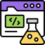

Fine-grained rubrics for visual coding
Public visual-coding data has been curated with a single score per sample, which says little about what went wrong, or with a verifier written for one task, which does not carry to the next. PrismaForge replaces both with a rubric synthesized for each instruction: a short list of weighted checks, split between the code and its render, that filters the training data and then rewards the policy.
Decomposed rubric synthesis
Domain-level checks plus instruction-specific requirements, sized to the task's difficulty, scored on the program and on its render. The same rubric filters the data and rewards the policy.
The broadest open dataset
PrismaCoder-2M spans text-centric and vision-centric tasks, from plots and web pages to notation, documents and animation, each sample executed, rendered and rubric-checked.
Open models that rival proprietary systems
PrismaCoder-9B and 35B lead open models by a wide margin and match or surpass proprietary systems on charts, front-end pages and semi-structured documents.
One rubric, two uses
Walk a sample through the pipeline: the map follows the paper's pipeline figure, and the panel shows a real Web UI task, its rubric, its scores and where the thresholds send it.
The broadest open visual-coding dataset
Four kinds of seeds become self-contained tasks; every candidate is executed by its format's gatekeeper and gated by rubric score. The result spans text-centric and vision-centric tasks in ten languages, about two million samples in all.
- Python
- HTML / CSS

JavaScript- SVG
- LaTeX
- Mermaid
- Vega-Lite
- LilyPond
- Asymptote
- Chemical structures
Vision-centric from an image: a chart to reproduce, a page to edit
- WebUI Generation357.1K
- Chart-to-Code196.5K
- Image-to-SVG181.0K
- WebUI Editing175.0K
- Demo / Artifacts163.3K
- Chemical Structures108.0K
- Interactive Artifacts9.1K
Text-centric from a description
- Chart Generation181.1K
- Demo / Artifacts163.0K
- Text-to-WebUI135.2K
- LaTeX133.1K
- SVG Generation53.3K
- Animation (Manim)35.9K
- JavaScript28.5K
- Mermaid22.7K
- LilyPond21.9K
- Vega-Lite20.0K
- Asymptote19.4K
Visualization fundamentals
Plotting datasets in Python, SVG, Mermaid and Vega-Lite: mapping data to axes and marks, composing legends and layered plots.
Scientific artifacts
Plotting code from GitHub repositories and figures from arXiv papers, split into self-contained units by an AST pass.
Front-end layout and interaction
Pages from WebCode2M and MCD for layout; interactive demos adapted from JanusCoder or rewritten from WebSight, MMMG and ProImageBench prompts for behavior.
Symbolic notation
Molecules seeded from PubChem; LaTeX, Asymptote and LilyPond programs that must compile; Manim scenes from the 3Blue1Brown video code.
Open models that rival proprietary systems
One headline metric per benchmark. The filled shapes are PrismaCoder-9B and 35B, the dashed outline is the strongest open baseline on each axis, and the gold outline is one proprietary model, chosen in the legend. The full tables sit below.
- best open baseline
- PrismaCoder-9B
- PrismaCoder-35B
PrismaCoder clears the open baselines on every axis but image-to-SVG, where VinciCoder leads. Against Claude Opus 4.6, PrismaCoder-35B is ahead on chart reproduction, front-end pages, image-to-SVG and chemical structures; interactive science is the one axis where the proprietary model keeps a wide lead.
PrismaCoder-35B leads the open models on four of the five text-centric benchmarks, with text-to-SVG staying with Qwen3.5-35B. Claude Opus 4.6 stays ahead on every text-centric axis; the gap is smallest on long-tail plotting and text-to-SVG and widest on artifacts and pandas plotting.
Full table
Best / second among open models. Lower is better where marked ↓.
PrismaCoder-9B and PrismaCoder-35B-A3B are post-trained from Qwen3.5-9B and Qwen3.5-35B-A3B. Data synthesis used frontier models: Claude Opus 4.6 for curation, Gemini 3 Pro for rubric generation, Gemini 3 Flash as the judge for gating and RL. Evaluation follows each benchmark's official protocol, with its designated judge where one is specified, and reports deterministic metrics alongside judge scores.
What the rubric changes
Three checks on the primitive itself: as a filter, as a recipe on other backbones, and against human judgment.
Rubric filtering beats direct judging
Qwen3.5-9B is fine-tuned on two equal-sized subsets of the same pool. One subset is kept by a single holistic score per sample and the other by the PrismaForge rubric. The rubric-filtered model scores higher on every benchmark, by 24 points on Vega-Lite, and since the subsets are the same size the gap comes from which samples each judge keeps.
- direct judge
- PrismaForge rubric
The recipe carries to other backbones
The same data and method applied to Gemma-4-31B-it and Qwen3-VL-30B-A3B-Instruct, on Python plotting and HTML. On both, every metric ends above the base model and RL adds to SFT on every one; SFT carries most of the ChartMimic gain, RL most of the HTML gains.
- SFT gain over base
- RL gain over SFT
Rubric scores track human judgment
On 100 training samples rated by annotators, three proprietary judges agree with humans far more closely through the rubric than through a direct score, both in absolute level and in how they order the samples.
Gold beside the model, task by task
Benchmark samples with the gold render next to the base model, the SFT-only model and PrismaCoder.
Open models, data and code
Paper
The technical report, with the rubric prompts, data sources and per-benchmark tables.
Code
PrismaForge: rubric synthesis, the per-format gatekeepers, gating and the RL reward.
PrismaCoder-2M
The curated corpus, with each sample's rubric and scores.
PrismaCoder-9B / 35B
Open-weight checkpoints, post-trained from Qwen3.5-9B and Qwen3.5-35B-A3B.
@article{prismacoder,
title={PrismaCoder: Pushing the Boundaries of Open Multimodal Code Intelligence through Decomposed Rubric Synthesis},
author={},
journal={},
year={}
}